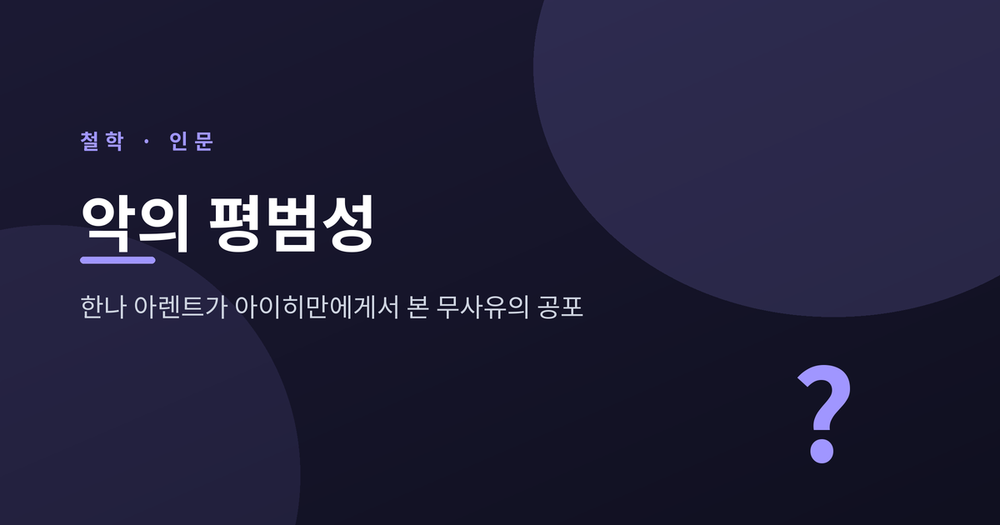
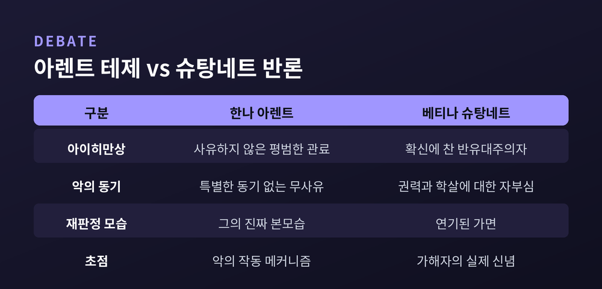

한나 아렌트가 아이히만에게서 본 무사유의 공포
오늘은 한나 아렌트의 '악의 평범성'에 대해 이야기해 보려 합니다.
거대한 악은 특별한 괴물이 아니라, 사유와 판단을 멈춘 평범한 사람에 의해 관료적으로 저질러질 수 있다는 통찰입니다.
이 글에서는 개념의 진짜 뜻, 아이히만 재판의 맥락, 그리고 이 테제를 둘러싼 찬반 논쟁까지 정리하겠습니다.

먼저 결론부터 말씀드리겠습니다.
'악의 평범성(banality of evil)'은 악이 사소하다는 뜻이 결코 아닙니다.
거대한 악이 지극히 평범하고 보통인 사람에 의해, 일상적이고 관료적인 방식으로 저질러질 수 있다는 통찰입니다.
이 개념은 한나 아렌트가 1963년 펴낸 『예루살렘의 아이히만』의 부제에서 왔습니다.
아렌트는 1961년 예루살렘에서 열린 아돌프 아이히만 재판을 잡지 *The New Yorker*의 특파원 자격으로 참관했습니다.
그 보도 기사를 묶은 책이 바로 『예루살렘의 아이히만: 악의 평범성에 대한 보고서』입니다.
한국에서는 흔히 이렇게 통용됩니다.
"무비판적 사고, 곧 무사유는 평범한 사람도 악마로 만들 수 있다."
아돌프 아이히만은 나치 친위대(SS) 장교였습니다.
1942년 반제 회의 이후, 그는 유럽 점령지 유대인을 게토와 절멸수용소로 보내는 대량 이송 실무를 조직하고 관리하는 임무를 맡았습니다.
수백만 명의 식별과 집결, 수송을 "끔찍한 효율성"으로 조율한 이른바 '책상 위의 살인자'였습니다.
종전 후 그는 아르헨티나로 도주해 약 10년간 숨어 지냈습니다.
1960년 5월 11일, 이스라엘 정보기관 모사드 요원들이 부에노스아이레스 인근에서 그를 납치했습니다.
재판은 1961년 4월 11일 예루살렘에서 시작되었습니다.
기소장은 유대 민족에 대한 죄, 인도에 반한 죄, 전쟁범죄 등 15개 죄목을 담았습니다.
1961년 12월 15일 사형이 선고되었고, 항소 기각 후 1962년 6월 1일 자정 직후 교수형으로 처형되었습니다.
이는 이스라엘 역사상 유일하게 집행된 사형입니다.
이 재판은 단죄로 끝나지 않았습니다.
아렌트의 보도가 그것을 '평범한 가해자'의 문제로 다시 읽게 만들었기 때문입니다.
아렌트가 재판정에서 마주한 아이히만은 괴물이 아니었습니다.
그녀의 표현을 빌리면 "소름 끼치도록 정상적인(terrifyingly normal)" 평범한 관료였습니다.
그는 도착적이지도, 가학적이지도 않았습니다.
그가 저지른 거대한 악은 사악한 동기에서 나온 것이 아니었습니다.
자기 행위의 실제 의미로부터 단절된 '사유하지 않음(thoughtlessness)'에서 비롯되었다는 것이 핵심입니다.
아이히만은 출세를 위해 맡은 일을 성실히 수행했을 뿐이라고 변호했습니다.
"나는 그저 내 일을 했다"고 말하며 죄책감도, 자신을 심판하는 이들에 대한 증오도 보이지 않았습니다.
아렌트가 가장 충격받은 것은 그의 '사유 능력의 결여'였습니다.
이는 어리석음이나 지능의 문제가 아닙니다.
타인의 입장에서 생각하지 못함, 상투어 뒤에 숨어 현실을 직시하지 못함을 뜻합니다.
사유하지 않는 사람은 어떤 규칙이든 부과되는 대로 따르기 쉽습니다.
그 규칙이 선하든 악하든 말입니다.
나치 독일에서 일어난 일이 바로 그것이었습니다.
아렌트의 생각은 한 번에 만들어지지 않았습니다.
예전엔 그녀도 다른 표현을 썼습니다.
1951년 『전체주의의 기원』 마지막 부분에서 아렌트는 전체주의의 악을 칸트의 표현을 빌려 '근본악(radical evil)'이라 불렀습니다.
인간을 잉여적 존재로 만들어 인간성 자체를 말소하려는, 처벌로도 용서로도 다룰 수 없는 악이라는 뜻이었습니다.
흥미롭게도 '악의 평범성'이라는 표현의 씨앗은 스승 카를 야스퍼스와의 1946년 서신에 있었습니다.
야스퍼스는 '근본악'이라는 용어가 가해자에게 "사탄적 위대함"의 후광을 씌워 그 행위를 신화로 만들 위험이 있다고 지적했습니다.
그는 가해자들의 "산문적 진부함"을 강조했습니다.
아렌트는 이 지적에 진실이 있다고 인정했습니다.
"끔찍한 것을 신화화하려는 모든 충동에 맞서 싸워야 한다"고 답했습니다.
'근본악'에서 '악의 평범성'으로의 이동은, 가해자를 거대 악마로 신비화하는 대신 악의 실제 작동 방식을 정확히 이해하려는 시도였던 셈입니다.
여기서 한 가지를 짚고 가야 합니다.
'악의 평범성' 테제는 발표 이후 지금까지 찬반이 첨예하게 갈립니다.
가장 강력한 반론은 독일 철학자 베티나 슈탕네트에게서 나왔습니다.
그녀는 『예루살렘 이전의 아이히만』(독일어 2011 / 영어 2014)에서 아렌트의 묘사를 정면으로 반박합니다.
아이히만이 아르헨티나 망명 시절 남긴 '사센 인터뷰'를 근거로, 그가 확신에 찬 반유대주의자이자 나치 이데올로그였음을 보입니다.
재판정의 '평범한 관료' 모습은 연기된 가면이었고, 아렌트가 그 가면에 속았다는 것입니다.
역사가 데이비드 세사라니도 비슷한 결의 반론을 폅니다.
아이히만은 점진적으로 학살의 가해자가 되어간 인물이지, 단순한 톱니바퀴가 아니었다는 것입니다.
다만 한 가지 단서를 덧붙이겠습니다.
슈탕네트조차 자신의 작업을 아렌트와의 적대가 아니라 "한나 아렌트와의 대화"로 규정합니다.
아렌트의 책이 "너무 적게 알면서도 명확한 판단을 내리는 용기"를 지녔다고 평가하기도 했습니다.

'악의 평범성'은 자주 오용됩니다.
"누구나 그런 상황이면 그랬을 테니 가해자에게 책임이 없다"는 면죄부로 쓰이곤 합니다.
그러나 아렌트의 의도는 정반대였습니다.
무사유한 순응이 어떻게 책임을 회피하게 만드는지를 고발하는 데 있었습니다.
말년의 아렌트는 이 물음을 끝까지 밀고 나갔습니다.
미완의 유작 『정신의 삶』 서문에서 그녀는 아이히만 재판이야말로 '사유'에 대한 자신의 관심을 촉발했다고 밝힙니다.
그녀가 던진 물음은 이것이었습니다.
선과 악을 분별하는 능력이 사유하는 능력과 연결되어 있는 것은 아닌가.
아렌트는 사유를 '나와 나 자신 사이의 고독한 대화'로 보았습니다.
이 대화가 현실화될 때, 그 부산물로 양심이 생겨납니다.
양심이란 "내가 나 자신과 친구로 남으려면 할 수 없는 일"을 일러주는 자기 검토의 기제입니다.
끝으로 한 마디만 더 드리겠습니다.
아렌트가 아이히만이라는 인물을 정확히 읽었는지는 여전히 논쟁거리로 남아 있습니다.
그러나 그녀가 남긴 통찰의 무게는 줄어들지 않습니다.
"악은 사유하지 않음에서 온다."
무사유와 순응, 책임의 분산이라는 문제는 현대의 관료제와 조직, 기술 사회에서 여전히 절실합니다.
거대한 악이 또다시 평범한 얼굴로 찾아온다면, 우리는 그것을 알아볼 수 있겠습니까.